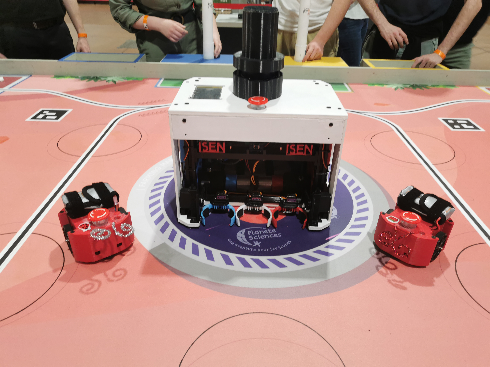

Qui sommes nous ?
Bienvenue nous sommes le club Modelec de l'ISEN Nantes, le club de robotique, électronique et modelisme de l'ISEN Nantes. Nous sommes une association étudiante qui a pour but de promouvoir la robotique, l'électronique et le modelisme auprès des étudiants de l'ISEN Nantes. Nous organisons des ateliers et des événements autour de ces thèmes. Nous participons également à la coupe de france de robotique où pour notre première participation en 2024 nous avons fini 14e sur 82.
Une photo de l'équipe

L'équipe Modelec lors de la coupe de France de robotique 2024
Nos projets pour l'année
Nous voulons réitérer notre participation à la coupe de France de robotique en 2025. Nous voulons également organiser des ateliers de soudure, de programmation et de modélisme. Cette année, nous aimerions également organiser des événements autour de ces thèmes comme des visites de Fablab, des initiations,…

Notre robot
Voici Serge, notre robot pour la coupe de France de robotique 2024. Il est équipé de 2 roues motrices, 2 roues codeuses, 3 pinces et 2 bras d'orientation pour les panneaux solaires. Il est également équipé d'une caméra pour la vision et d'un lidar pour la détection d'adversaire et la triangulation. Coté hardware, il est géré par un raspberry pi 5 et un arduino mega. Côté software, il est géré par des programmes C++ fait sur mesure dont le code est disponible sur notre github.
A coté Serge est accompagné de 2 Pixels, ses PAMI (Partie Autonome Mobile Intelligente) qui sont des robots autonomes qui peuvent se déplacer et se repérer dans l'espace. Ils sont gérés par des arduino uno.
Serge

Serge et ses 2 Pixels
Nous contacter
Vous pouvez nous contacter par mail à l'adresse contact@modelec.club